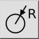
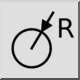
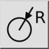
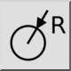

Radiaal
Werkbalk / icoon:
 

Menu: Bemating > Radiaal
Sneltoets: D, R
Opdrachten: dimrad | dimradial | dr
Dit is een automatische vertaling.
Werkbalk / icoon:
 

Menu: Bemating > Radiaal
Sneltoets: D, R
Opdrachten: dimrad | dimradial | dr
Creëert radiale afmetingen voor cirkels of bogen.